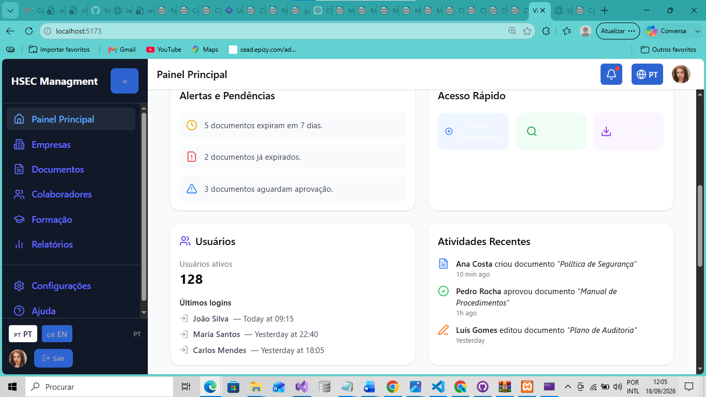
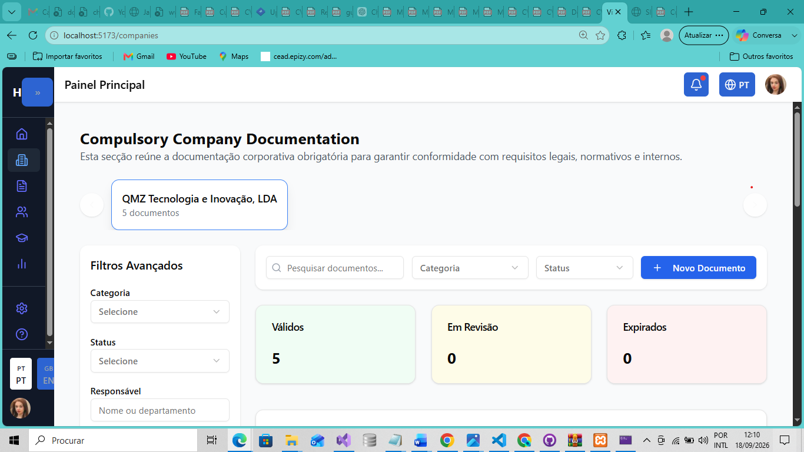
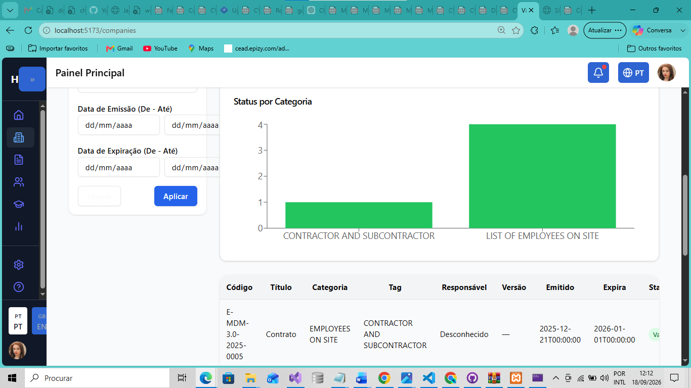
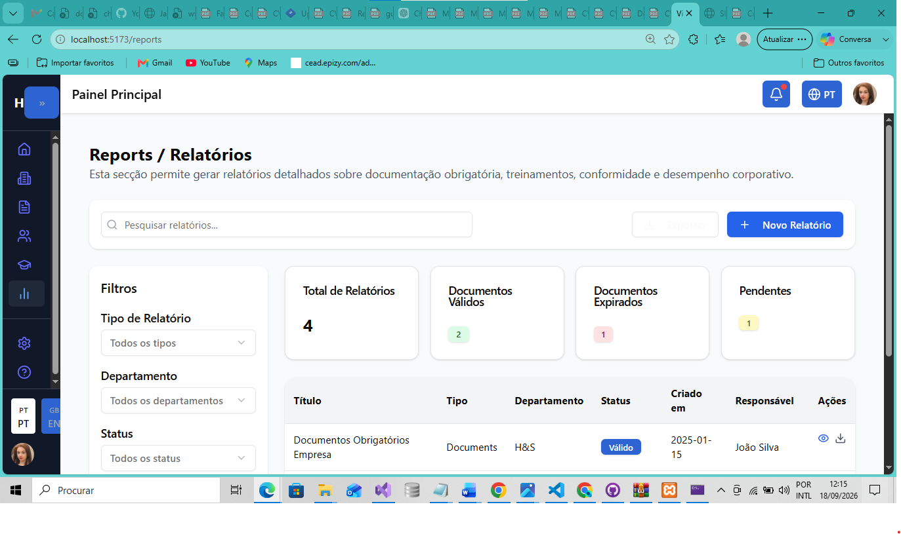

PROJECTO INDEPENDENTE · 2025 — PRESENTE
HSEC Management
Plataforma Web multi-tenant para gestão de Health, Safety, Environment & Compliance, concebida para centralizar processos, documentação e indicadores relacionados com Saúde, Segurança, Ambiente e Conformidade.

Sobre o projecto
O HSEC Management é um sistema Web desenvolvido para apoiar organizações na gestão integrada de Saúde, Segurança, Ambiente e Conformidade.
A solução foi concebida para substituir processos manuais, documentos dispersos e mecanismos pouco centralizados por uma plataforma digital com controlo de acesso, rastreabilidade, organização documental e acompanhamento de indicadores.
O sistema segue uma abordagem multi-tenant, permitindo que diferentes organizações utilizem a mesma aplicação com separação lógica dos seus dados.
Objectivos principais
- Centralizar a documentação obrigatória e corporativa.
- Facilitar o acompanhamento de validade e estado dos documentos.
- Organizar informação de colaboradores, formação e certificações.
- Apoiar a gestão de riscos, incidentes e auditorias.
- Melhorar a rastreabilidade das operações e alterações.
- Disponibilizar indicadores e relatórios de conformidade.
- Reduzir a dependência de processos manuais e dispersos.
Módulos e áreas funcionais
Organizações e Sites
Gestão de empresas, organizações, sites e respectivas estruturas operacionais.
Documentação
Gestão de tipos de documentos, etiquetas, versões, upload, aprovação, arquivo, retenção e estados de validade.
Pessoas e Colaboradores
Registo de pessoas, vínculos, competências e informação relacionada com colaboradores.
Formação e Certificações
Organização de cursos, inscrições, certificados e informação associada à qualificação dos colaboradores.
Riscos e Auditorias
Estrutura preparada para registo de perigos, avaliações de risco, auditorias e respectivos itens de verificação.
Incidentes e Acções Correctivas
Registo de incidentes, causas, medidas correctivas e evidências relacionadas.
Activos e Equipamentos de Protecção
Gestão de activos, atribuições e inspecções de equipamentos, incluindo EPIs.
Contratos e Acordos
Organização de contratos, acordos e informação relativa às partes envolvidas.
Notificações e Alertas
Estrutura para alertas operacionais, notificações e acompanhamento de expiração de documentos.
Relatórios e Indicadores
Apresentação de informação de conformidade, documentação e desempenho através de relatórios e indicadores.
Arquitectura da solução
A aplicação foi organizada segundo uma arquitectura em camadas, procurando separar responsabilidades de domínio, aplicação, persistência e exposição de serviços.
Domain
↓
Application
↓
Infrastructure / Persistence
↓
API Controllers
↓
React Frontend
Backend e domínio
- Arquitectura em camadas: separação entre domínio, aplicação, infraestrutura e API.
- Multi-tenancy por schema: cada organização utiliza um schema próprio no SQL Server.
- Catálogo central: registo e gestão dos tenants através de um contexto central.
- Persistência por tenant: utilização de contexto de aplicação com schema dinâmico.
- Provisionamento de tenants: criação de estruturas e aplicação de migrations de forma idempotente.
- Auditoria e integridade: controlo de criação e actualização de registos, soft-delete, índices e regras de integridade.
- Autenticação: autenticação baseada em JWT e refresh tokens.
- Ficheiros: suporte ao carregamento e armazenamento de documentos.
Frontend
- Aplicação SPA desenvolvida com React e TypeScript.
- Interface organizada com sidebar e topbar.
- Dashboard com KPIs, alertas e actividades recentes.
- Páginas para organizações, documentos, pessoas e formação.
- Filtros e operações de gestão documental.
- Integração com a API através de Axios e React Query.
- Suporte para os idiomas português e inglês.
- Componentes visuais e gráficos para apresentação de dados.
O meu papel no projecto
O HSEC Management foi desenvolvido unicamente por mim, desde a concepção inicial até à implementação das funcionalidades actualmente disponíveis.
A minha participação abrangeu diferentes fases do ciclo de vida do software:
- Análise e levantamento de requisitos com o cliente.
- Concepção geral da solução e dos fluxos funcionais.
- Definição da arquitectura da aplicação.
- Modelação do domínio e das entidades de dados.
- Desenvolvimento da API REST.
- Implementação da arquitectura multi-tenant.
- Configuração de migrations e persistência com Entity Framework Core.
- Implementação de autenticação e controlo de acesso.
- Desenvolvimento da interface Web em React e TypeScript.
- Integração entre frontend, backend e base de dados.
- Testes de endpoints através de Swagger e Postman.
- Documentação técnica, manutenção e evolução contínua.
Desafios técnicos abordados
- Organização de uma arquitectura preparada para crescimento funcional e manutenção evolutiva.
- Implementação de isolamento lógico de dados entre diferentes organizações.
- Gestão de migrations e estruturas de base de dados por tenant.
- Integração entre uma API .NET e uma aplicação React.
- Estruturação de regras de negócio relacionadas com documentação, validade, auditoria e conformidade.
- Organização de uma interface com vários módulos e diferentes níveis de informação.
Galeria do projecto




Tecnologias utilizadas
Backend
Frontend
Ferramentas e práticas
Estado actual
O HSEC Management encontra-se em desenvolvimento contínuo. A plataforma possui uma base arquitectural e funcional preparada para receber novos módulos, melhorar os fluxos existentes e evoluir de acordo com as necessidades identificadas.